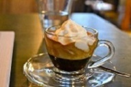
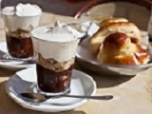
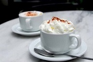

Кофе Кон Панна
250 мл
Стоимость:
200
руб.
Кофе кон панна, или, как его чаще называют, эспрессо кон панна – это кофе со взбитыми сливками по-итальянски. Ближайший родственник напитка – кофе по-венски.
В переводе с итальянского con panna означает «со сливками»). Для того, чтобы взбить сливки до крутых пиков, не имея под рукой миксера, нужно хорошенько потрудиться. Поэтому в XVII–XVIII веках кофе кон панна могли себе позволить только зажиточные итальянцы.
С изобретением в XX веке кофемашин и электрических приспособлений, позволяющих быстро взбить сливки в крутую пену, кон панна стало готовить намного легче, и он появился в меню даже самых недорогих заведений. Но если в прежние времена безразлично было, каким образом сварена кофейная основа, то с середины XX века и до сегодняшнего дня напиток делают только с эспрессо. Появился даже термин «эспрессо кон панна».



Эспрессо кон панна легко отличить от кофе по-венски:
1. Кофе по-венски принято готовить на основе чёрного кофе, сваренного любым способом. Настоящий кон панна делают исключительно с эспрессо;
2. Сливки для кофе по-венски взбивают до состояния гладкой, эластичной пены, которую можно пить, одновременно ощущая во рту кофейную горечь и нежную сливочную сладость. Кофе кон панна украшают шапкой сливок, взбитых в крутую пену, до устойчивых пиков. Кон панна нельзя пить вместе с пеной: её сперва нужно съесть ложечкой, а потом запить кофе;
3. Кон панна австрийцы именуют францисканером. Дело в том, что капуцины – простонародное прозвище монахов из ордена францисканцев. По логике австрийцев, если итальянский кофе с молоком – капучино, то более аристократичный напиток со сливками – францисканер.
Кон панна подают в толстостенных керамических чашках – демитассе, или прозрачных стаканах. Гостю обязательно предлагают ложечку. Если кофе не подслащён заранее, можно подать сахарницу или стикер сахара.
Кофе кон панна хорошо сочетается с песочным ореховым печеньем, шоколадом. Из десертов предпочтительнее фруктово-ягодные желе.
Напиток отнюдь не диетический, поэтому тем, кто следит за фигурой, после кон панна придётся отказаться от равноценного по калорийности блюда или вообще от ужин.
Обратно в меню
Стоимость:
200
руб.
1. Кофе по-венски принято готовить на основе чёрного кофе, сваренного любым способом. Настоящий кон панна делают исключительно с эспрессо;
2. Сливки для кофе по-венски взбивают до состояния гладкой, эластичной пены, которую можно пить, одновременно ощущая во рту кофейную горечь и нежную сливочную сладость. Кофе кон панна украшают шапкой сливок, взбитых в крутую пену, до устойчивых пиков. Кон панна нельзя пить вместе с пеной: её сперва нужно съесть ложечкой, а потом запить кофе;
3. Кон панна австрийцы именуют францисканером. Дело в том, что капуцины – простонародное прозвище монахов из ордена францисканцев. По логике австрийцев, если итальянский кофе с молоком – капучино, то более аристократичный напиток со сливками – францисканер.